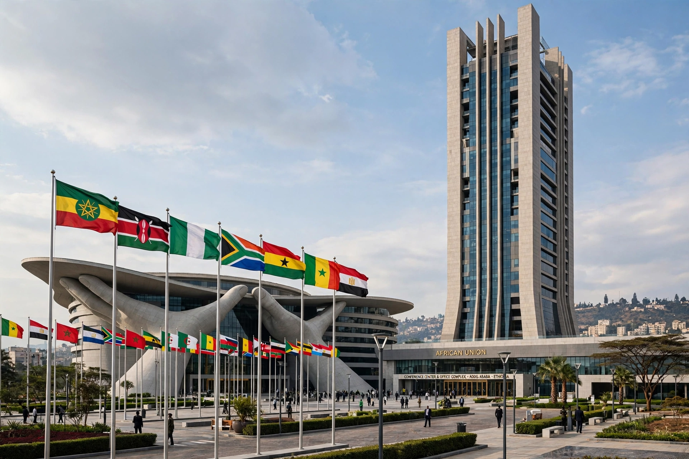

[Image placeholder: The African Union headquarters in Addis Ababa]The **African Union** (**AU**) is a continental union of 55 member states located on the continent of Africa. Launched in 2002 in Durban, South Africa, it succeeded the Organisation of African Unity (OAU, founded 1963 in Addis Ababa). Its headquarters — the AU Conference Center, built with Chinese funding — is in Addis Ababa, Ethiopia, and its stated aims include African unity and solidarity, peace and security, democratic governance, sustainable development and a stronger African voice in global affairs.
The AU's organs include the Assembly of heads of state, the Pan-African Parliament (in Midrand, South Africa), the Peace and Security Council, and the African Commission on Human and Peoples' Rights. It has suspended members after coups (Mali, Guinea, Sudan, Burkina Faso, Niger, Gabon in the 2020s), authorised peace operations in Somalia and elsewhere with mixed success, and launched the African Continental Free Trade Area (AfCFTA) in 2019, headquartered in Accra. The AU joined the G20 as a permanent member in 2023. Recurring criticisms concern funding dependence on external donors and reluctance to intervene in members' internal crises.
The OAU, founded in the era of decolonisation by leaders including Kwame Nkrumah and Haile Selassie, prioritised liberation and non-interference. The AU's 2000 Constitutive Act, championed at the Sirte Declaration by Muammar Gaddafi and others, added a right to intervene in grave circumstances (war crimes, genocide, crimes against humanity) — a first for a regional body.